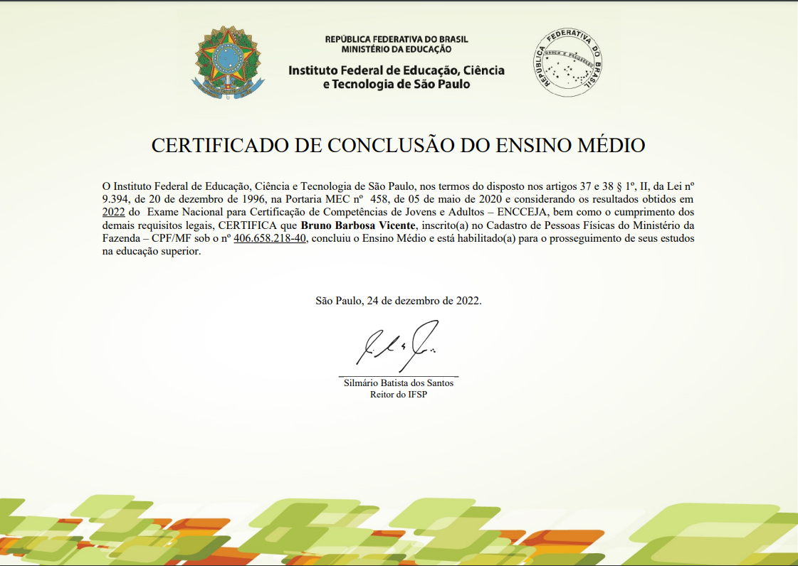

Formação Academica
-
Ensino MedioEscola publica 
- Iniciei os estudos em escola publica
- Finalizei os estudos pelo encceja
- concluido
sempre estudei em escola publica, venho de uma familia de baixa renda, entao meu unico contato foi com a rede publica de ensino, inicie na terceira fase da pré-escola, logo em seguida ensino-fundamental, após cursei ate o segundo ano do ensino médio onde precisei parar os estudos para começar a trabalhar e ajudar minha mãe com as despesas da casa, anos depois quando estava ja com a vida nos trilhos finalizei o ensino medio pelo Exame Nacional Para Certificação de Competências de Jovens e Adultos (Encceja).
-
Tecnico De Hardware e redesEuro anglo - 2018 - 140hrs
 modulos percorridos
modulos percorridos
- eletronica
- montagem
- manutenção
- programação
- software
- configuração
- redes
- vírus
- concluido
realizei o curso tecnico de hardware e redes por gostar muito de computadores, aprendi um pouco das diciplinas acima listadas, onde tive meu primeiro contato com programação, fiz apenas uma calculadora usando a programação pelo programa
c++que na época achei facinante e passei a ter interesse por esse assunto, desde entao venho buscando conhecimento na area para me aprofundar. -
superior - engenharia de softwareuniversidade anhanguera - 2º Semestre MODULOS PERCORRIDOS
- Sociedade Brasileira e Cidadania
- Administração e Economia Para Engenheiros
- Engenharia, Ciência e Tecnologia
- Legislação, Segurança do Trabalho e Meio Ambiente
- cursando
após finalizar o ensino médio e ter feito o curso tecnico de hardware e redes onde tive muito interesse pela area da programação, escolhi fazer uma graduação na area da Tecnologia, foi muito dificil a decisão mas acabei por escolher então engenharia de software onde será 8 Semestres de estudos para que eu possa me apronfundar no assunto, acabei de finalizar o primeiro Semestre, onde adquiri conhecimento nas diciplinas listadas acima, pela grade curricular as proximas diciplinas sao: 2º semestre - ALGORITMOS E PROGRAMAÇÃO ESTRUTURADA, ANÁLISE E MODELAGEM DE SISTEMAS, FUNDAMENTOS DE CÁLCULO APLICADO, LINGUAGEM DE PROGRAMAÇÃO, LÓGICA E MATEMÁTICA COMPUTACIONAL. 3º semestre - ANÁLISE ORIENTADA A OBJETOS, ENGENHARIA DE REQUISITOS, ENGENHARIA DE SOFTWARE, MODELAGEM DE DADOS, PROJETO DE EXTENSÃO I - ENGENHARIA DE SOFTWARE, SISTEMAS DE COMPUTAÇÃO E DE INFORMAÇÃO. 4º semestre - COMPUTAÇÃO EM NUVEM, FUNDAMENTOS DA INTELIGÊNCIA ARTIFICIAL, LINGUAGEM ORIENTADA A OBJETOS, MÉTODOS MATEMÁTICOS, PROGRAMAÇÃO E DESENVOLVIMENTO DE BANCO DE DADOS, REDES E SISTEMAS DISTRIBUÍDOS. 5º semestre - ARQUITETURA DE SOFTWARE, GERENCIAMENTO E QUALIDADE DE SOFTWARE, GOVERNANÇA DE TECNOLOGIA DA INFORMAÇÃO, INTERFACE E USABILIDADE, PROGRAMAÇÃO WEB, PROJETO DE EXTENSÃO II - ENGENHARIA DE SOFTWARE. 6º semestre - BANCOS DE DADOS NÃO RELACIONAIS, FRAMEWORKS PARA DESENVOLVIMENTO DE SOFTWARE, IMPLEMENTAÇÃO DE PROJETO WEB, INFRAESTRUTURA ÁGIL, PROJETO DE SOFTWARE, SEGURANÇA E AUDITORIA DE SISTEMAS. 7° semestre - DESENVOLVIMENTO DE E-COMMERCE COM CMS, DESENVOLVIMENTO MOBILE, GREEN IT, PROJETO DE EXTENSÃO III - ENGENHARIA DE SOFTWARE, SEGURANÇA EM ENGENHARIA DE SOFTWARE, TESTES E MANUTENÇÃO DE SOFTWARE. 8º semestre - ARQUITETURA E ORGANIZAÇÃO DE COMPUTADORES, DIREITO CIBERNÉTICO, EMPREENDEDORISMO E INOVAÇÃO, GESTÃO DO CONHECIMENTO E DA TECNOLOGIA DA INFORMAÇÃO, SISTEMAS OPERACIONAIS.
-
Santander Bootcamp 2023 - Fullstack Java+Angular
 aguardando inicio das aulas
aguardando inicio das aulas
- Aguardando
Aguardando processo seletivo.
-
linguagens que possuo conhecimento